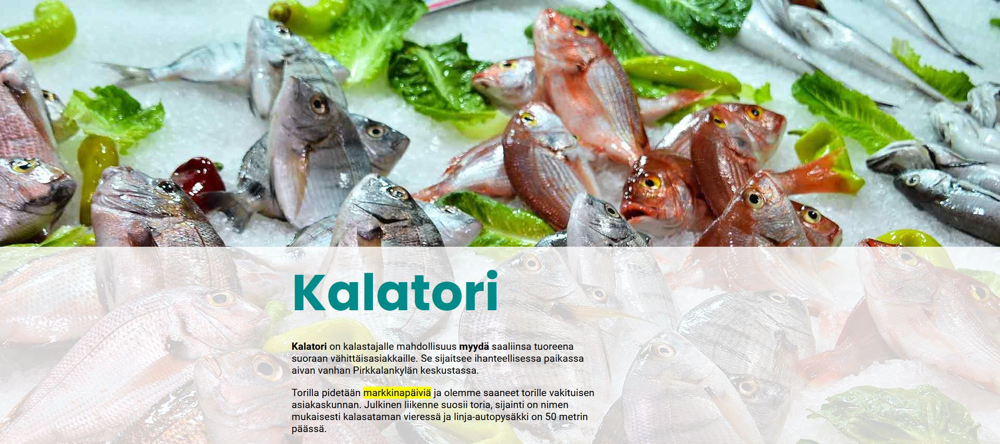

Demo 5 - Kalatori: header
Tässä demossa toteutetaan suurempi sivukokonaisuus pala kerrallaan.
Aloitetaan headerista:
- Tarkista, että projektisi kansiorakenne on suunnitteen mallin mukainen.
-
Huomioi, että index.html ja style.css sijaan nyt käytetään käyttöliittymäelementin nimeä
header.html ja header.css
- Lisää ja linkitä dokumenttiin myös common.css, johon laitat kaikkia sivuja koskevat yleiset tyylit, kuten body{...}
html_css_basics
|
├── demos
| |
│ └── d5_kalatori
| |
│ ├── header.html
│ ├── header.css
│ ├── common.css
| |
│ ├─── img
│ │ ├── kuva_1.jpg
│ │ └── kuva_2.jpg
|

Header / Hero
- Toteuta yllä olevan suunnitelman mukainen koko sivun täyttävä header
- Tällaista kansikuvaa kutsutaan myös Hero:ksi
- Etsi haluamasi kalatoriaiheinen kuva Pixabaystä tai käytä alla olevaa
- Lisää kuva CSS-taustakuvana ja tutustu CSS background-size ja background-repeat propertyihin
- Käytä pääotsikossa h1, valitsemaasi Google fonttia
- Importta fontti CSS:n ensimmäisellä rivillä
- Laita muu leipäteksti p tagien sisälle
- Kokeile tekstissä korostus- ja lihavointi tyylejä
- Jos teksti ei erotu hyvin taustakuvasta, niin lisää läpinäkyvä taustaväri h1 ja p tagit käärivälle diville
Kalatori
Kalatori on kalastajalle mahdollisuus myydä saaliinsa tuoreena suoraan vähittäisasiakkaille. Se sijaitsee ihanteellisessa paikassa aivan vanhan Pirkkalankylän keskustassa.
Torilla pidetään markkinapäiviä ja olemme saaneet torille vakituisen asiakaskunnan. Julkinen liikenne suosii toria, sijainti on nimen mukaisesti kalasataman vieressä ja linja-autopysäkki on 50 metrin päässä.